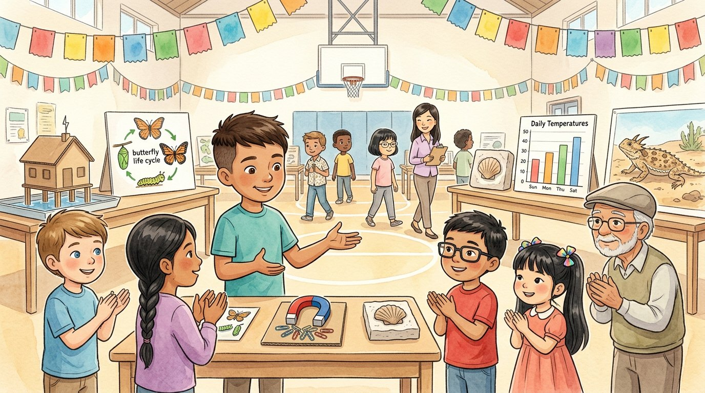

3er grado · Ciencias · 3-PS2 · 3-LS1 · 3-LS2 · 3-LS3 · 3-LS4 · 3-ESS2 · 3-ESS3
La gran feria de ciencias
Un cuento para repasar todo lo que aprendimos en tercero.
Palabras de ciencia que vas a aprender
Toca una palabra verde para ver qué significa.
El cuento
Al final del año, la escuela organizó la gran feria de ciencias de tercer grado. Toda la familia vino a ver a Israel: Alejandro viajó desde Texas, y llegaron también el bisabuelo, Adrián y Génesis.
En la primera mesa estaba el juego de la cuerda. —Una es un empujón o un jalón —explicó Jamal—. Las fuerzas equilibradas no cambian el movimiento de un objeto. Las desequilibradas pueden cambiar su rapidez o su dirección.
En la mesa de Mei, un levantaba clips sin tocarlos. —Los imanes atraen el hierro, y sus polos iguales se repelen —dijo ella—. Adrián lo intentó con un lápiz de madera, pero no pasó nada.
Lucía mostró el cartel de los ciclos de vida. —La oruga se convierte en mariposa dentro de la crisálida. Ese gran cambio se llama . Génesis aleteó con los brazos como una mariposa.
Alejandro y Sofía explicaban los rasgos con fotos de perritos. —Un , como el color de los ojos, pasa de los padres a los hijos; montar en bicicleta, en cambio, se aprende.
En la mesa del bisabuelo… perdón, ¡en la de Israel!, había una concha de piedra. —Este es evidencia de que hace millones de años un mar cubría Illinois —explicó Israel. Al lado había un lagarto de juguete con : del mismo color que la arena, para que los depredadores no lo vean.
La última mesa tenía una gráfica de temperaturas y la casita que aguantó el viento. —El tiempo cambia cada día, pero el es el tiempo normal de un lugar durante muchos años —dijo Israel—. Y aunque no podemos parar las tormentas, podemos diseñar soluciones para protegernos.
Cuando la feria terminó, la señora Kim les dio a todos un listón que decía «Científico de tercer grado». El bisabuelo aplaudió más fuerte que nadie.
—¿Qué fue lo que más te gustó? —le preguntó Alejandro a Israel. Israel lo pensó. —Que todo está conectado: las fuerzas, los seres vivos, las rocas y el tiempo. ¡Y que todavía nos falta muchísimo por descubrir!
Glosario
- fuerza
- Un empujón o un jalón que puede mover, detener o cambiar la dirección de un objeto.
- imán
- Un objeto que atrae el hierro sin tocarlo. Sus polos iguales se repelen y sus polos distintos se atraen.
- metamorfosis
- Un gran cambio en la forma del cuerpo durante la vida de un animal, como de oruga a mariposa.
- rasgo heredado
- Una característica que pasa de los padres a los hijos, como el color de los ojos.
- fósil
- Los restos o las marcas de un ser vivo de hace mucho tiempo, guardados en la roca.
- camuflaje
- Colores o formas que ayudan a un ser vivo a confundirse con el lugar donde vive.
- clima
- El tiempo que hace normalmente en un lugar durante muchos años.
Preguntas
Elige la respuesta correcta. Si te equivocas, el cuento te muestra dónde está la respuesta.
-
Pregunta A. ¿Qué pasa cuando las fuerzas están desequilibradas?
Las fuerzas desequilibradas pueden cambiar la rapidez o la dirección de un objeto. Las equilibradas no cambian su movimiento.
-
Pregunta B. ¿Qué pasa con los polos iguales de dos imanes?
Los imanes atraen el hierro, y sus polos iguales se repelen.
-
Pregunta C. ¿Dónde se convierte la oruga en mariposa?
La oruga se convierte en mariposa dentro de la crisálida: es la metamorfosis.
-
Pregunta D. ¿Cuál de estos es un rasgo heredado?
El color de los ojos pasa de los padres a los hijos; montar en bicicleta se aprende.
-
Pregunta E. ¿De qué es evidencia la concha fósil de Israel?
El fósil es evidencia de que hace millones de años un mar cubría Illinois.